RNGkind()[1] "Mersenne-Twister" "Inversion" "Rejection" set.seed(4750); u1 <- runif(3)
set.seed(4750); u2 <- runif(3)
identical(u1, u2)[1] TRUEMATH 4750 / MSSC 5750 Computational Statistics
Marquette University
MATH 4750 - Spring 2027
rnorm, rgamma, rbeta, … but
?RNGkind.set.seed() makes a simulation reproducible.[1] "Mersenne-Twister" "Inversion" "Rejection" [1] TRUEA toy linear congruential generator \(x_{k+1} = (a x_k + c) \bmod m\), \(u_k = x_k/m\):
[1] 1 0 0 0 1 1 0 0 0 1[1] 30 45 38 51 40 35 [1] "H" "X" "D" "R" "K" "V" "Q" "A" "S" "L" "Y" "T" "I" "C" "B" "J" "Z" "F" "W"
[20] "G" "P" "E" "O" "N" "M" "U"x
1 2 3
26 18 56 Probability integral transformation. If \(X\) is continuous with cdf \(F_X\), then \(U = F_X(X)\sim\text{Uniform}(0,1)\).
Define \(F_X^{-1}(u) = \inf\{x: F_X(x) = u\}\), \(0<u<1\). If \(U\sim\text{Uniform}(0,1)\), then
\[ P(F_X^{-1}(U)\le x) = P(U\le F_X(x)) = F_X(x), \]
so \(F_X^{-1}(U)\) has the same distribution as \(X\).
Simulate from \(f_X(x) = 3x^2\), \(0<x<1\). Here \(F_X(x) = x^3\), so \(F_X^{-1}(u) = u^{1/3}\).
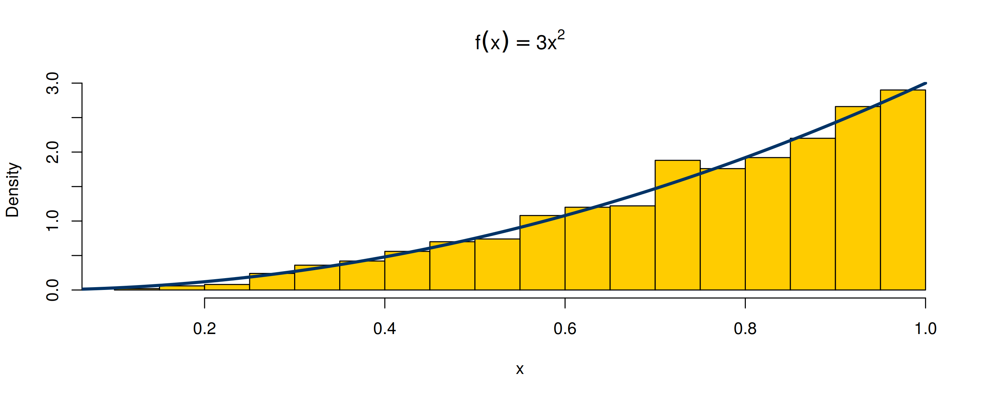
\(X\sim\text{Exp}(\lambda)\): \(F_X(x) = 1-e^{-\lambda x}\), so \(F_X^{-1}(u) = -\frac1\lambda\log(1-u)\).
-log(runif(n)) / lambda.set.seed(4750); lambda <- 2
x <- -log(runif(1e4)) / lambda
par(mfrow = c(1, 2))
hist(x, prob = TRUE, breaks = 50, col = "#88A0C8", main = "Exp(2) by inverse transform")
curve(dexp(x, lambda), add = TRUE, lwd = 3, col = "red")
qqplot(qexp(ppoints(1e4), lambda), x, pch = ".", xlab = "theoretical", ylab = "sample", main = "QQ plot")
abline(0, 1, col = "red", lwd = 2)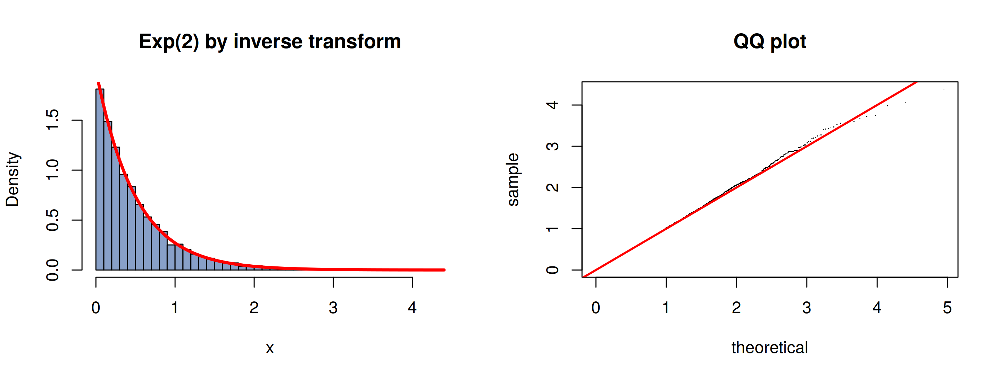
| Distribution | F(x) | F<U+207B><U+00B9>(u) |
|---|---|---|
| Exponential(<U+03BB>) | 1 - exp(-<U+03BB>x) | -log(1-u)/<U+03BB> |
| Pareto(a, b) | 1 - (b/x)^a, x <U+2265> b | b (1-u)^(-1/a) |
| Cauchy(<U+03B8>, <U+03B7>) | 1/2 + arctan((x-<U+03B8>)/<U+03B7>)/<U+03C0> | <U+03B8> + <U+03B7> tan(<U+03C0>(u - 1/2)) |
| Logistic | 1/(1 + exp(-x)) | log(u/(1-u)) |
| Weibull(k, <U+03BB>) | 1 - exp(-(x/<U+03BB>)^k) | <U+03BB>(-log(1-u))^(1/k) |
| Rayleigh(<U+03C3>) | 1 - exp(-x<U+00B2>/(2<U+03C3><U+00B2>)) | <U+03C3> sqrt(-2 log(1-u)) |
Which common continuous distributions do not have a closed-form \(F^{-1}\)? (Normal, gamma, beta, …) We need other methods for these.
If \(\cdots < x_{i-1} < x_i < \cdots\) are the points of discontinuity of \(F_X\), then \(F_X^{-1}(u) = x_i\) where \(F_X(x_{i-1}) < u \le F_X(x_i)\).
For each random variate: generate \(u\sim\) Uniform(0,1) and deliver \(x_i\) such that \(F(x_{i-1}) < u \le F(x_i)\).
Example 3.4 (two-point distribution). \(P(X=1) = p = 0.4\), \(P(X=0) = 0.6\):
\(f(x) = pq^x\), \(x = 0,1,2,\dots\) and \(F(x) = 1-q^{x+1}\). Solve \(1 - q^x < u \le 1 - q^{x+1}\):
\[ x = \lceil \log(1-u)/\log(q)\rceil - 1 \quad\Rightarrow\quad x = \lfloor \log(u)/\log(q)\rfloor\ \ (\text{since } 1-U\sim U) \]
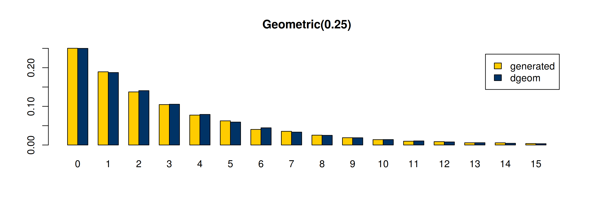
\[ f(x) = \frac{a\,\theta^x}{x},\quad x = 1,2,\dots,\quad a = \big(-\log(1-\theta)\big)^{-1} \]
sum(u > F) + 1 counts how many \(F(x) < u\).exp(log(a) + x*log(theta) - log(x)) for numerical accuracy.rlogarithmic <- function(n, theta) {
u <- runif(n)
N <- ceiling(-16 / log10(theta)) # initial length of cdf vector
k <- 1:N
a <- -1 / log(1 - theta)
fk <- exp(log(a) + k * log(theta) - log(k))
Fk <- cumsum(fk)
x <- integer(n)
for (i in 1:n) {
x[i] <- as.integer(sum(u[i] > Fk)) # F^{-1}(u) - 1
while (x[i] == N) { # extend the cdf if needed
logf <- log(a) + (N + 1) * log(theta) - log(N + 1)
fk <- c(fk, exp(logf)); Fk <- c(Fk, Fk[N] + fk[N + 1]); N <- N + 1
x[i] <- as.integer(sum(u[i] > Fk))
}
}
x + 1
} 1 2 3 4 5 6 7 8
observed 0.720 0.173 0.057 0.028 0.010 0.007 0.004 0.001
p 0.721 0.180 0.060 0.023 0.009 0.004 0.002 0.001
se 0.014 0.012 0.008 0.005 0.003 0.002 0.001 0.001The observed relative frequencies are within about two standard errors of the theoretical probabilities.
Suppose \(X\) has density (pmf) \(f\), \(Y\) has density \(g\), and there is a constant \(c\) with
\[ \frac{f(t)}{g(t)} \le c\quad\text{for all } t \text{ with } f(t) > 0. \]
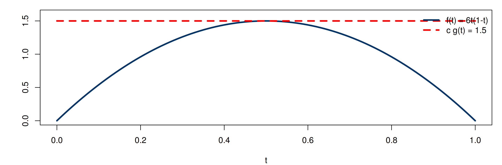
\(f(x) = 6x(1-x)\), \(0<x<1\). Take $g = $ Uniform(0,1); then \(f(x)/g(x)\le 6\), so \(c = 6\) works (the optimal \(c\) is \(1.5\)). Accept \(x\) if
\[ \frac{f(x)}{cg(x)} = \frac{6x(1-x)}{6(1)} = x(1-x) > u. \]
10% 20% 30% 40% 50% 60% 70% 80% 90%
Qhat 0.180 0.274 0.351 0.424 0.493 0.564 0.641 0.723 0.820
Q 0.196 0.287 0.363 0.433 0.500 0.567 0.637 0.713 0.804
se 0.010 0.010 0.010 0.011 0.011 0.011 0.010 0.010 0.010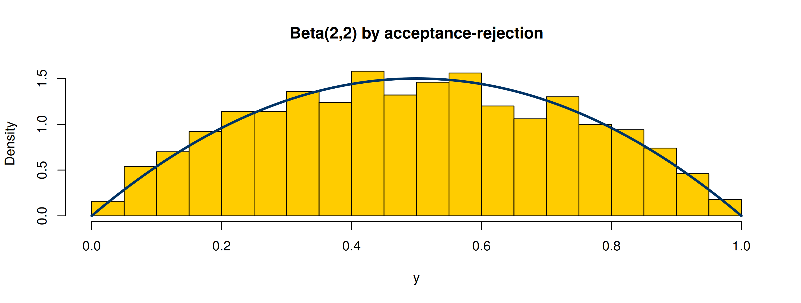
rAR <- function(n, f, rg, dg, c) {
out <- numeric(0); tries <- 0
while (length(out) < n) {
m <- ceiling(1.2 * c * (n - length(out))) # propose in batches
y <- rg(m); u <- runif(m); tries <- tries + m
out <- c(out, y[u < f(y) / (c * dg(y))])
}
structure(out[1:n], acceptance = n / tries)
}
set.seed(4750)
z <- rAR(1e4, f = function(x) 6 * x * (1 - x), rg = runif, dg = dunif, c = 1.5)
attr(z, "acceptance") # close to 1/c = 0.667[1] 0.5556Use acceptance-rejection with a Cauchy proposal to generate standard normal variates. What is the smallest valid \(c\)?
Many distributions are related by transformations:
[1] 0.003788 0.996780 0.013924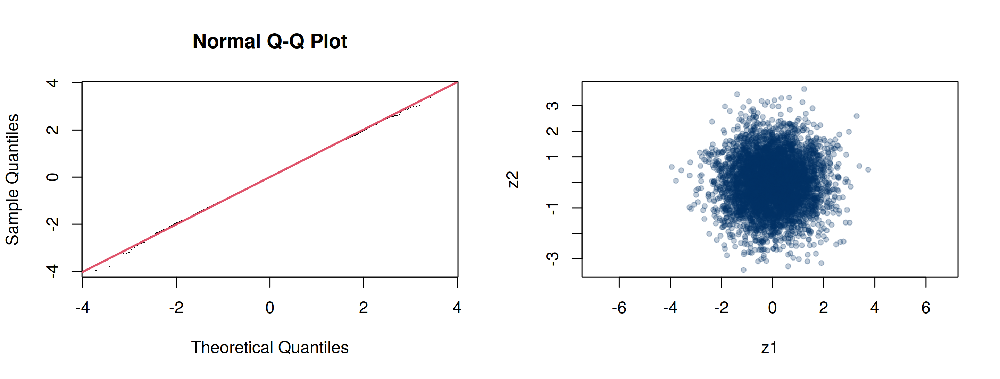
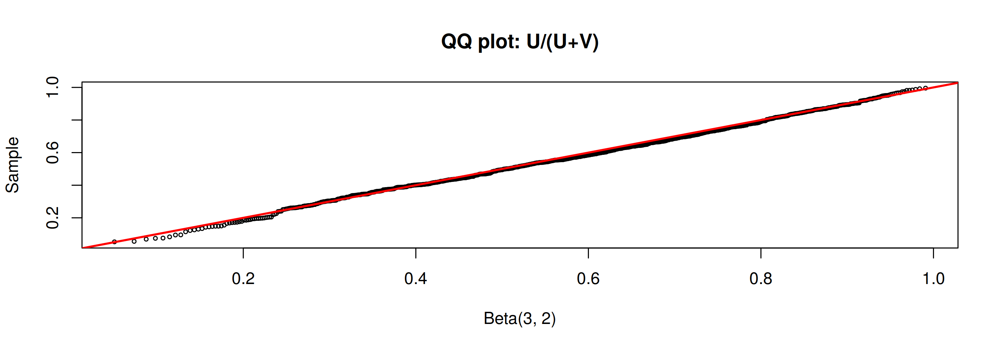
If \(U, V\stackrel{\text{iid}}{\sim}\) Uniform(0,1), then \(X = \left\lfloor 1 + \dfrac{\log V}{\log\big(1-(1-\theta)^U\big)}\right\rfloor\sim\) Logarithmic(\(\theta\)).
1 2 3 4 5 6 7 8
observed 0.716 0.185 0.065 0.020 0.008 0.004 0.000 0.002
theory 0.721 0.180 0.060 0.023 0.009 0.004 0.002 0.001\(\chi^2(\nu)\) = sum of \(\nu\) squared iid \(N(0,1)\). Fill an \(n\times\nu\) matrix with \(n\nu\) normals and take row sums of squares.
mean mean_theory E_y2 E_y2_theory
1.936 2.000 7.488 8.000 rowSums() and colSums() are much faster than apply(X, 1, sum) (we benchmark this in Ch 15).
A convolution adds the random variables; a mixture averages the distributions. To generate a mixture: first draw the component label, then draw from that component.
\(X_1\sim\text{Gamma}(2,2)\), \(X_2\sim\text{Gamma}(2,4)\); compare \(S = X_1 + X_2\) with \(F_X = 0.5F_{X_1} + 0.5F_{X_2}\).
set.seed(4750); n <- 1000
x1 <- rgamma(n, 2, 2); x2 <- rgamma(n, 2, 4)
s <- x1 + x2 # the convolution
u <- runif(n); k <- as.integer(u > 0.5) # vector of 0's and 1's
x <- k * x1 + (1 - k) * x2 # the mixture
par(mfrow = c(1, 2))
hist(s, prob = TRUE, breaks = 30, col = "#88A0C8", main = "Convolution")
hist(x, prob = TRUE, breaks = 30, col = "#FFCC00", main = "Mixture")
curve(0.5 * dgamma(x, 2, 2) + 0.5 * dgamma(x, 2, 4), add = TRUE, lwd = 3)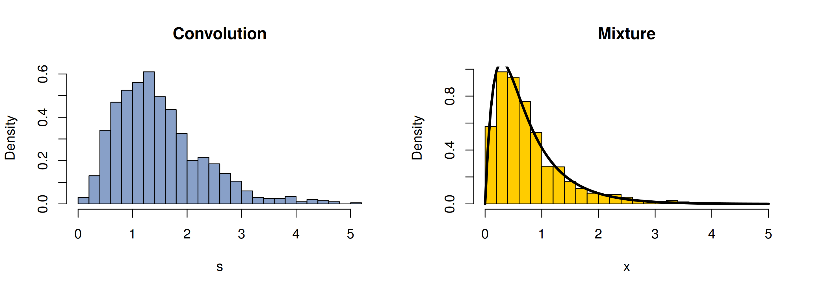
\(F_X = \sum_{j=1}^5\theta_jF_{X_j}\), \(X_j\sim\text{Gamma}(r = 3, \lambda_j = 1/j)\), \(\theta_j = j/15\).
set.seed(4750); n <- 5000
k <- sample(1:5, size = n, replace = TRUE, prob = (1:5) / 15) # component labels
rate <- 1 / k
x <- rgamma(n, shape = 3, rate = rate)
f <- function(x) sapply(x, function(xi) sum((1:5) / 15 * dgamma(xi, 3, 1 / (1:5))))
hist(x, prob = TRUE, breaks = 60, col = "#FFCC00", main = "Mixture of 5 gammas", xlim = c(0, 40))
for (j in 1:5) curve(dgamma(x, 3, 1 / j), add = TRUE, col = "gray50", lty = 2)
curve(f(x), add = TRUE, lwd = 3, col = "#003366")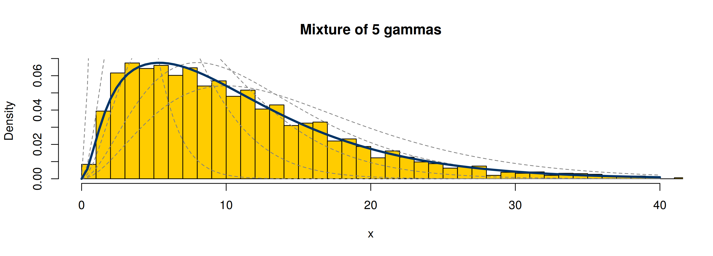
If \(X\mid\Lambda = \lambda\sim\text{Poisson}(\lambda)\) and \(\Lambda\sim\text{Gamma}(r,\beta)\), then \(X\sim\text{NegBin}(r, p = \beta/(1+\beta))\).
[,1] [,2] [,3] [,4] [,5] [,6] [,7] [,8]
mix 0.311 0.331 0.203 0.091 0.039 0.019 0.004 0.002
negbin 0.316 0.316 0.198 0.099 0.043 0.017 0.006 0.002
se 0.015 0.015 0.013 0.009 0.006 0.004 0.002 0.001If \(\mathbf{Z}\sim N_d(\mathbf 0,\mathbf{I}_d)\) and \(\boldsymbol \Sigma= \mathbf C\mathbf C^\text{T}\), then \(\mathbf{X}= \mathbf C\mathbf{Z}+ \boldsymbol \mu\sim N_d(\boldsymbol \mu,\boldsymbol \Sigma)\). For a matrix of \(n\) rows:
\[ \mathbf{X}= \mathbf{Z}\,\mathbf Q + \mathbf J\boldsymbol \mu^\text{T},\qquad \mathbf Q^\text{T}\mathbf Q = \boldsymbol \Sigma. \]
Three factorizations of \(\boldsymbol \Sigma\):
| Method | Factorization | R |
|---|---|---|
| Spectral (Ex 3.16) | <U+03A3> = P <U+039B> P<U+1D40>, Q = P <U+039B>^<U+00BD> P<U+1D40> | eigen() |
| SVD (Ex 3.17) | <U+03A3> = U D V<U+1D40>, Q = U D^<U+00BD> V<U+1D40> | svd() |
| Choleski (Ex 3.18) | <U+03A3> = Q<U+1D40> Q, Q upper triangular | chol() |
rmvn.eigen <- function(n, mu, Sigma) {
d <- length(mu); ev <- eigen(Sigma, symmetric = TRUE)
Q <- ev$vectors %*% diag(sqrt(ev$values)) %*% t(ev$vectors)
Z <- matrix(rnorm(n * d), nrow = n, ncol = d)
Z %*% Q + matrix(mu, n, d, byrow = TRUE)
}
rmvn.svd <- function(n, mu, Sigma) {
d <- length(mu); S <- svd(Sigma)
Q <- S$u %*% diag(sqrt(S$d)) %*% t(S$v)
Z <- matrix(rnorm(n * d), nrow = n, ncol = d)
Z %*% Q + matrix(mu, n, d, byrow = TRUE)
}
rmvn.Choleski <- function(n, mu, Sigma) {
d <- length(mu); Q <- chol(Sigma) # Choleski factorization of Sigma
Z <- matrix(rnorm(n * d), nrow = n, ncol = d)
Z %*% Q + matrix(mu, n, d, byrow = TRUE)
}
mu <- c(0, 1, 2); Sigma <- matrix(c(1, -.5, .5, -.5, 1, -.5, .5, -.5, 1), 3)
set.seed(4750); X <- rmvn.Choleski(5000, mu, Sigma)
round(colMeans(X), 2); round(cor(X), 2)[1] -0.02 1.01 2.00 [,1] [,2] [,3]
[1,] 1.00 -0.50 0.49
[2,] -0.50 1.00 -0.49
[3,] 0.49 -0.49 1.00set.seed(100); n <- 100; d <- 30; N <- 2000
mu <- numeric(d); Sigma <- cov(matrix(rnorm(n * d), n, d)) # a 30 x 30 covariance
timing <- rbind(
eigen = system.time(for (i in 1:N) rmvn.eigen(n, mu, Sigma))[1:3],
svd = system.time(for (i in 1:N) rmvn.svd(n, mu, Sigma))[1:3],
Choleski = system.time(for (i in 1:N) rmvn.Choleski(n, mu, Sigma))[1:3],
MASS = system.time(for (i in 1:N) MASS::mvrnorm(n, mu, Sigma))[1:3])
timing user.self sys.self elapsed
eigen 0.716 0.01 0.856
svd 0.837 0.00 0.859
Choleski 0.374 0.00 0.377
MASS 0.702 0.00 0.712\(p N_d(\boldsymbol \mu_1,\boldsymbol \Sigma) + (1-p)N_d(\boldsymbol \mu_2,\boldsymbol \Sigma)\) with \(\boldsymbol \mu_1 = \mathbf 0\), \(\boldsymbol \mu_2 = (2,\dots,2)\), \(\boldsymbol \Sigma= \mathbf{I}\), \(p = 0.5\).
loc.mix <- function(n, p, mu1, mu2, Sigma) {
n1 <- rbinom(1, size = n, prob = p); n2 <- n - n1
x <- rbind(MASS::mvrnorm(n1, mu1, Sigma), MASS::mvrnorm(n2, mu2, Sigma))
x[sample(1:n), ] # mix them
}
set.seed(4750)
x <- loc.mix(1000, .5, rep(0, 4), rep(2, 4), diag(4))
par(mfrow = c(1, 4))
for (i in 1:4) hist(x[, i], prob = TRUE, breaks = 30, main = paste0("X", i), col = "#FFCC00", xlab = "")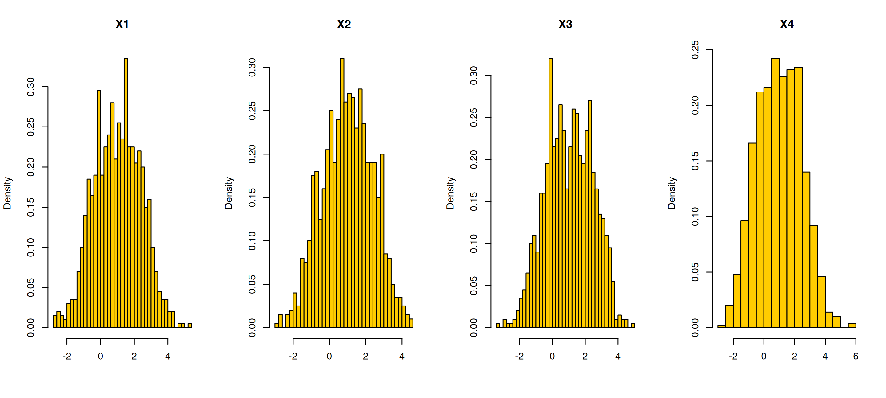
If \(\mathbf{Z}\sim N_d(\mathbf 0,\mathbf{I}_d)\), then \(\mathbf{Z}/\|\mathbf{Z}\|\) is uniformly distributed on the unit sphere \(S^{d-1}\).
runif.sphere <- function(n, d) {
M <- matrix(rnorm(n * d), nrow = n, ncol = d)
L <- function(x) sqrt(sum(x * x)) # length of a vector
M / apply(M, 1, L)
}
set.seed(4750)
par(mfrow = c(1, 2))
X <- runif.sphere(200, 2); plot(X, asp = 1, pch = 19, cex = .6, col = "#003366", main = "d = 2")
X <- runif.sphere(2000, 3)
scatterplot <- function(X) { # a rotated 2-d view of the 3-d points
R <- qr.Q(qr(matrix(c(1, 2, 3, 0, 1, -1, 1, 0, 0), 3)))
P <- X %*% R; plot(P[, 1:2], asp = 1, pch = 20, cex = .5, col = ifelse(P[, 3] > 0, "#C2185B", "gray70"),
main = "d = 3 (front hemisphere in pink)")
}
scatterplot(X)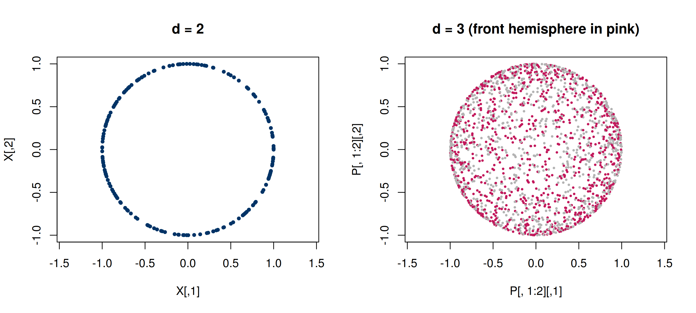
numpyimport numpy as np
rng = np.random.default_rng(4750)
u = rng.uniform(size=5000)
x = -np.log(u) / 2 # inverse transform: Exp(rate = 2)
Sigma = np.array([[1, .8], [.8, 1]])
Z = rng.standard_normal((5000, 2))
X = Z @ np.linalg.cholesky(Sigma).T # Choleski: rows ~ N(0, Sigma)
print(x.mean(), np.cov(X, rowvar=False))